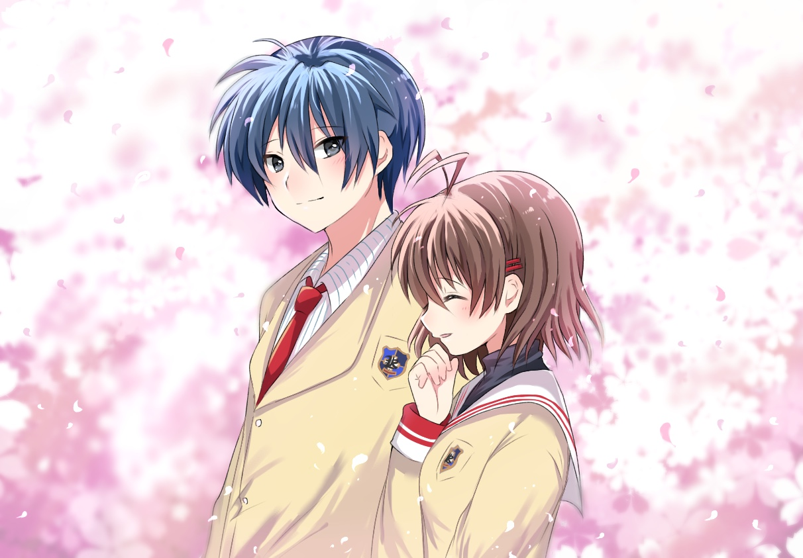

Les recommandations du Shoggoth
Clannad
Certains, dans la vie, n'ont pas de chance ...
Diffusion : Automne 2007 - Automne 2008
Format : deux saisons, de 23 et 24 épisodes (ici et là)
Genres : Tranche de vie, Comédie, Romance, Drame, Ecole, Surnaturel
Synopsis :
Tomoya Okazaki est un déliquant qui trouve sa vie monotone et croit qu'il n'achèvera rien dans sa vie. Avec son ami Yohei Sunohara, il sèche les cours et prévoit de passer son lycée de cette manière.
Un jour, alors qu'il marchait en direction du lycée, Tomoya passe à côté d'une fille qui se murmure à elle même tout bas. Sans péavis, elle se met à dire tout haut "anpan" [sorte de brioche fourrée à la pâte de haricot rouge sucrée] ce qui attire l'attention de Tomoya. Il découvrira plus tard qu'elle s'appelle Nagisa Furukawa, et va progressivement se lier d'amitié avec elle.
Il fera aussi la rencontre de Fuuko Ibuki, une élève de première année un peu étrange, Kotomi Ichinose une génie recluse dans la bibliothèque, Tomoyo Sakagami, une fille un peu violente qui tiendrait tête à n'importe qui, Kyou Fujibayashi et sa soeur jumelle Ryou, ainsi qu'une ribambelle d'autres personnages. Il va au fil du temps apprendre à les connaître, elles et leurs problèmes, et va les aider à les résoudre, se rendant compte que la vie n'est pas aussi monotone qu'il a pu le penser.